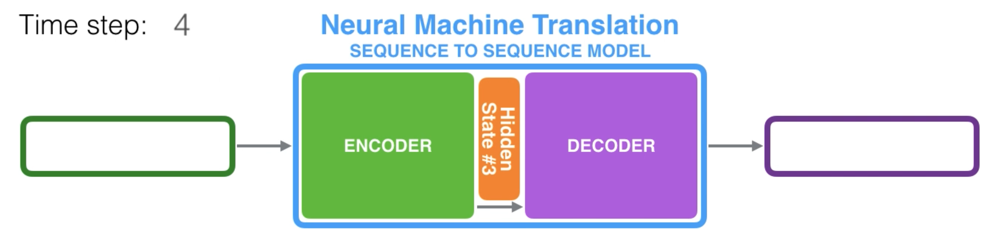
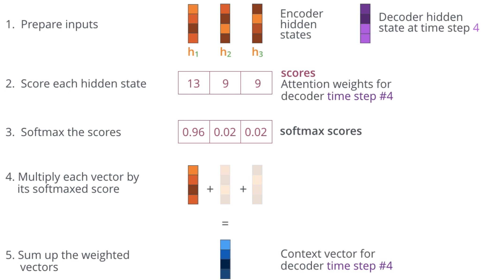

The Transformer network was introduced by Google in 2017 and the original paper has been cited over 13k times. I’m interested in investigating it, but found the original paper to be quite heady, so I took a step back and found an online resource regarding attention; summarized below.
Sequence to Sequence Modeling Without Attention
Previous work on sequence to sequence modeling (think language translation) was built on the encoder-decoder model. The key difference between using attention the structure of the hidden state (also termed ‘context’) passed from encoder to decoder. Previous seq2seq models passed only the last hidden state output from the final RNN stage into the decoder.

At a high level, the encoder packages an embedding to be passed along, while the decoder receives the embedding and reconstructs it along a new embedding scheme. The context vector is a bottleneck for this structure, suffering particularly from long sequences.
Attention Mechanism
Changes to accommodate attention are based primarily on the decoder. Instead of receiving only the last hidden state, the decoder receives all hidden states. With each hidden state, the decoder processes the ‘attention’ by multiplying ALL Encoder hidden states with an attention score. This attention score re-weights the context for the decoder stage as it produces its output.
Summary of the attention process below:
